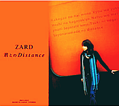

「HOLD ME」
「HOLD ME」
 「君とのDistance」
HOLD ME (1992.09.02)
ZARD
The only member of this mysterious but very famous "band", 坂井泉水 (Izumi Sakai, February 6, 1967 - May 27, 2007), who sang all the songs and wrote all the lyrics of this band, died for several years. The same year, almost the same day, with my grandpa's death. Sometimes you can feel it very strong, when the death is very close to you, or who you love. Now whenever I listened to ZARD, I can still feel the tender voice of Sakai. Almost the woman I love most in this world, and she is, like, my family. I believe every fan of ZARD has this feeling for her.
ZARD rarely released her album in falls. This album, "HOLD ME", is the 3rd album, also the first greatest hit one (sold 1,600,000 copies in the first week it released in Japan) is one of the two albums sold in falls. The other one is "君とのDistance (The Distance with You)", which is also the last original album, released after 13 years, 2005. Both of them present very comfortable and warm feelings, and are my favorites. "君とのDistance" is the first ZARD's album I bought, and it is more like a warm ballad with happiness but tender sadness of saying goodbye. But I choose this album, "HOLD ME", in my gallery.
The reason is the sense of nostalgia. When you listen to this album, you will just feel yourself in a narrow street with dim street lights. Maybe, the style of 90s top J-pop and Rock arouses this feeling. Facing the lights in the city, you miss your hometown and your childhood, your old days. I remember that, when I first got into college, I took it in my dormitory (others are: "STAY～夜明けのSoul～" by GARNET CROW and "beginning dream" by 菅崎 茜), and listened to it every night. There's no more explanations for this album.
I will take this album whenever I leave home for a long time.
Track List:
Release Information: